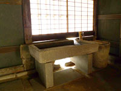

CULTURAL PROPERTY OHASHI HOUSE大橋家住宅
1796年（寛政8年）～1799年（寛政11年）にかけて建てられ、その後2度に渡り大規模な改修が行われました。その際に奥の新座敷が増築されています。また、屋敷の裏通りは戦後まで倉敷川が流れていました。
1861年（文久元年）に新田や塩田開発に財を成して庄屋となりました。1978年（昭和53年）に国の重要文化財に指定されています。
主屋
主屋は、通りには面しておらず正面には長屋門が構えられています。代官所の許可無くしては建てられなかった長屋門を構えていることから格式の高さが伺えます。
米蔵
表門を抜けて右手には米蔵があり、大橋家ゆかりの品々が展示されています。奥側の米蔵はホテル日航のレストラン八間蔵として利用されています。
坪庭
採光と通風を良くするために坪庭が設けられています。古備前の大がめや樹木の緑が心を和ませてくれます。
土間の門
土間の門上には「商売繁盛」や「家内安全」などのお札が置かれています。
土間の敷居
表門から土間までの敷居は簡単に取り外すことができ、米俵などを積んだ荷車が通りやすいように配慮されています。
土間
荷車で運ばれてきた米俵をここで検査し、並べられていました。米俵が土間一杯に積まれたこともしばしばでした。
内蔵
新座敷奥には内蔵があります。ここは当主しか出入り出来なかったとされています。
台所
台所にはかまどが5つ並び、従業員が多かったことが伺えます。一角には土公神（おどくうさん）が祀られています。
台所の流し台

流し台には豊島石（砂岩）をくり貫いて加工したものが使われています。
一覧に戻る